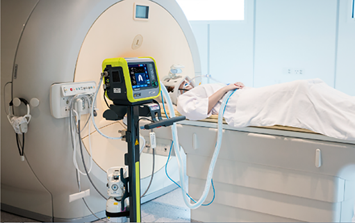

HAMILTON-MR1
Ventilador para resonancia magnética

DESCRIPCIÓN:
El ventilador HAMILTON-MR1 permite dar soporte respiratorio total o parcial a pacientes (adultos, pediátricos y neonatos) sedados durante el estudio de RM sin afectar la calidad de la imagen obtenida y cumpliendo con las normas de seguridad aplicables.
CARACTERÍSTICAS:
HAMILTON-MR1 es el primer respirador que se puede utilizar en campos magnéticos con una intensidad de 50 mT (equivalente al campo que hay a 1 m de distancia de un resonador de 3T), sin crear artefactos en la imagen de la RM. A diferencia de una máquina de anestesia, el ventilador HAMILTON-MR1 ofrece más herramientas y modos ventilatorios, portabilidad para el traslado de pacientes fuera de la sala de RM y ocupa menos espacio alrededor del resonador.
El blindaje con el que cuenta el ventilador MR1 permite la adecuada ventilación y asegura la calidad de las imágenes adquiridas durante el estudio de RM. Gracias a su magnetómetro integrado TeslaSpy, es posible visualizar el campo magnético para facilitar su colocación en forma segura para el paciente y el operador. Tiene además la función de monitorizar continuamente el campo magnético emitiendo una señal acústica y visual cuando el HAMILTON-MR1 se acerca demasiado, incluso cuando éste no se encuentra en uso. Las luces LED de TeslaSpy permiten colocar el ventilador de acuerdo a su distancia del resonador de forma sencilla de acuerdo al color activado en su pantalla.
Cuenta con una batería de hasta 9 horas de rendimiento (dependiendo del modo de ventilación) que permite realizar estudios sin la necesidad de retirar al paciente después de las secuencias de localización espacial y las secuencias de larga duración.
ESPECIFICACIONES TÉCNICAS:
Pulmón dinámico: Visualización en tiempo real de los pulmones con representaciones del volumen tidal, la distensibilidad pulmonar, resistencia y actividad del paciente.
Estado ventilatorio: Representación visual de la dependencia del paciente del respirador agrupada en oxigenación, eliminación de CO2 y actividad del paciente.
Gráfico de objetivos de la ASV: Visualización gráfica de los parámetros objetivos y los reales del volumen tidal, frecuencia, presión, actividad del paciente y ventilación minuto.
Monitorización: Visualización de más de 30 parámetros de monitorización.
Formas de onda en tiempo real: Pva, flujo y volumen.
Alarmas: Volumen, presión, volumen tidal, frecuencia, tiempo de apnea, oxígeno y flujo.
Modos de ventilación: Control de lazo cerrado (ASV), presión (PCV+, PSIMV+, ESPONT, APRV, DuoPAP), volumen (S)CMV+/APVcmv, SIMV+/APVsimv), no invasiva (NIV, NIV-ST, nCPAP y nCPAP-PC).
Compensación de fugas: Intelli Trig-respuesta automática a las distintas fugas y sensibilidad de disparo configurable en todos los modos.
Registro de eventos: Almacenamiento y visualización de 1,000 eventos con fecha y hora.
Proximidad a la fuente de RM: 50 mT (1 m de distancia del resonador).
Tipo de batería: de ión de litio (10.8 V CC, 4.3 Ah) con duración aproximada de 322 minutos o 5.3 horas en modo PCV+, tiempo de recarga 4 horas mínimo en CA.
• Disponibilidad en varias modalidades: Venta, renta, comodato.
• Contamos con servicio de capacitación, mantenimiento preventivo, mantenimiento correctivo, actualización y control de calidad externo.
• Disponibilidad de circuitos de paciente desechables con clasificación MR Safe para adulto (3 y 4.8 m) y neonato (3 m).
Registro: 1573E2014 SSA
DATOS COMPLEMENTARIOS: Para mayor información, asesoría técnica y pedidos comuníquese con nosotros:
GRUPO Eólica, S.A. DE C.V.
|
Teléfono: (55) 5584-4699 |
|